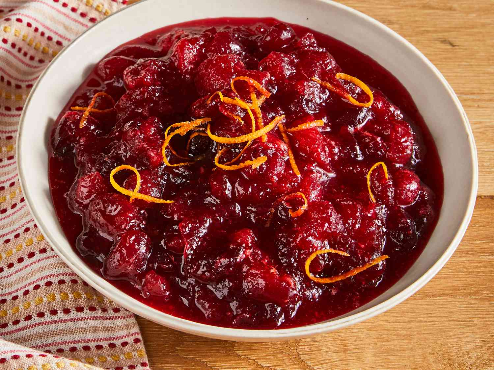

Cranberry Sauce

Description
Cranberry sauce is a delightful accompaniment that adds a burst of flavor to any meal, particularly during the holiday season. To prepare this classic condiment, you'll need fresh cranberries, sugar, and orange juice. The tartness of the cranberries is balanced by the sweetness of sugar, while the orange juice adds a citrusy brightness to the sauce.
Ingredients
- 12 ounces cranberries
- 1 cup white sugar
- 1 cup orange juice
Steps
- Gather all ingredients.
- Dissolve sugar in the orange juice in a medium saucepan over medium heat.
- Stir in the cranberries and cook until they start to pop, about 10 minutes.
- Remove from heat and place sauce in a bowl. It will thicken as it cools.
- Enjoy!
Go back to main menu.